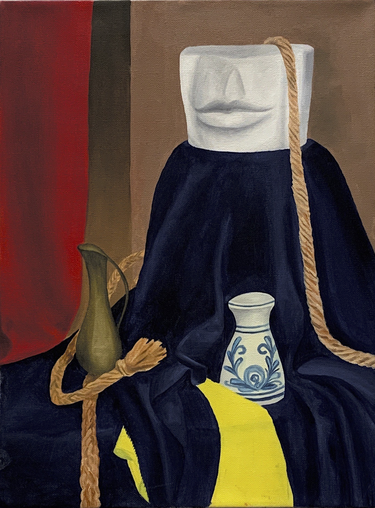
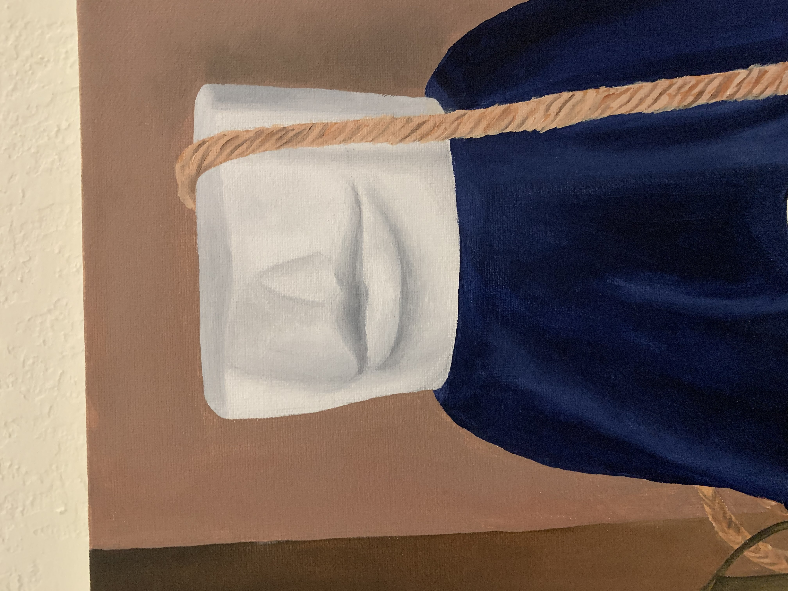
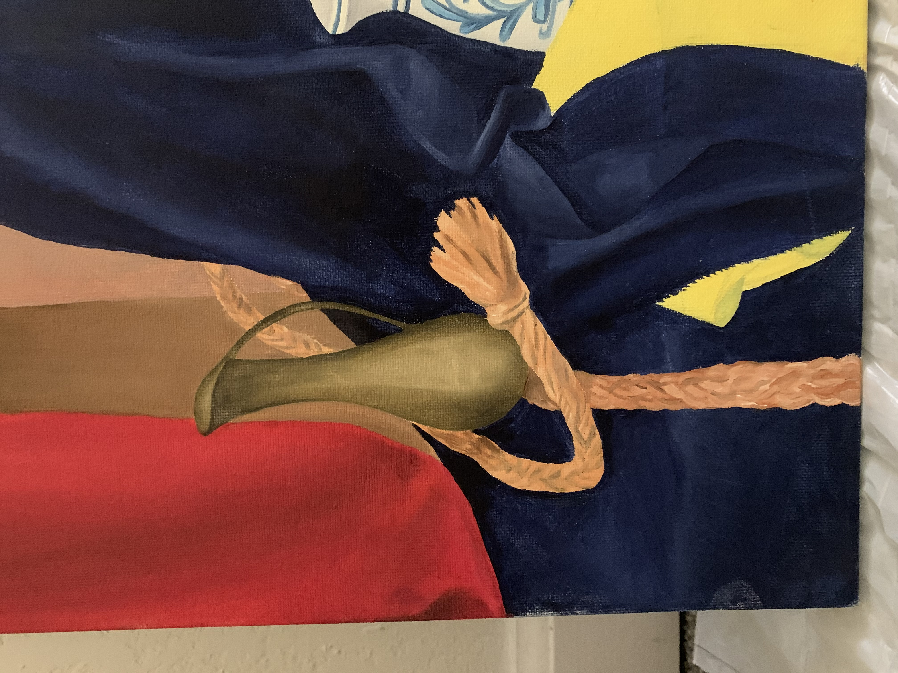
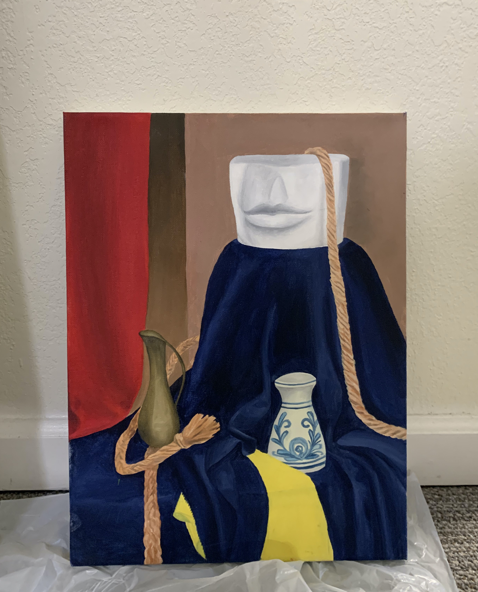

Full Color Still-Life
   Oil paint on stretched canvas, 12" x 16"
For this project in my Painting course at Binghamton University, the assignment was to create a full color still life. A table set up was installed in the center of the classroom, topped with various random objects, such as rope, vases, flowers, a guitar, etc. I chose the angle and section of the setup I wanted to focus on, which included a ornate blue & white vase, mouth sculpture, and rope. The painting was created with oil paint on stretched canvas.